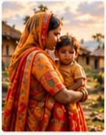
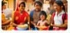
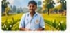

Education
Learning opportunities that help children and young people build a brighter future.
Preserve Our Roots
Strong communities grow when people can access the foundations of a secure and dignified life: education, healthcare, food, livelihoods and opportunity for their future.
Preserve Our Roots supports community-led initiatives that help people thrive while respecting every person's freedom of belief.
Why this matters
In many underserved communities, access to basic necessities can be limited. Food, healthcare, education and financial opportunity can shape the choices people feel able to make.
People should be able to meet everyday needs and pursue their beliefs freely, without pressure created by poverty or hardship.
We believe support should empower people, not influence their faith.

Understanding the issue
People should be free to make personal religious choices without coercion, fraud or undue influence. Access to food, education, healthcare and other essential support should never depend on changing one's beliefs.
Our work aims to strengthen communities and protect individual dignity through practical, inclusive support.
What we focus on
Learning opportunities that help children and young people build a brighter future.
Better access to basic medical care, health awareness and wellbeing.
Support that helps families meet essential nutrition and daily needs.

Skills and income opportunities that support long-term independence.

Stronger communities built through awareness, opportunity and participation.
Preserving more than a tradition
Our roots are the people we meet, the families we support and the values we carry forward: compassion, dignity and respect for every person's choices.
When communities have access to opportunity, they can grow stronger on their own terms.
Our vision
We work toward a future where support builds independence and respect for each person's beliefs.
Your contribution creates choices
Your support can help expand access to education, healthcare, essential food, livelihoods and community programmes.
See how your support helps →